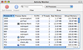

체계에서 실행중인 프로쎄스 보기

동태감시기는 콤퓨터에서 실행중인 전체 프로쎄스목록을 표시할수 있습니다. 다른 그룹으로 구성된 프로쎄스를 보거나 프로쎄스목록을 보관하거나 동태감시기를 사용하여 특정 프로쎄스를 끄기할수도 있습니다. 검색을 사용하여 원하는 프로쎄스를 찾을수도 있습니다.
■
동태감시기는 콤퓨터에서 실행중인 프로쎄스, CPU, 디스크, 기억기 및 망에 관한 정보를 표시할수 있습니다. CPU 사용량을 보여주는 떠도는 창문을 표시하거나 동태감시기 도크그림기호에서 이 활성상태를 표시하도록 설정할수도 있습니다.
